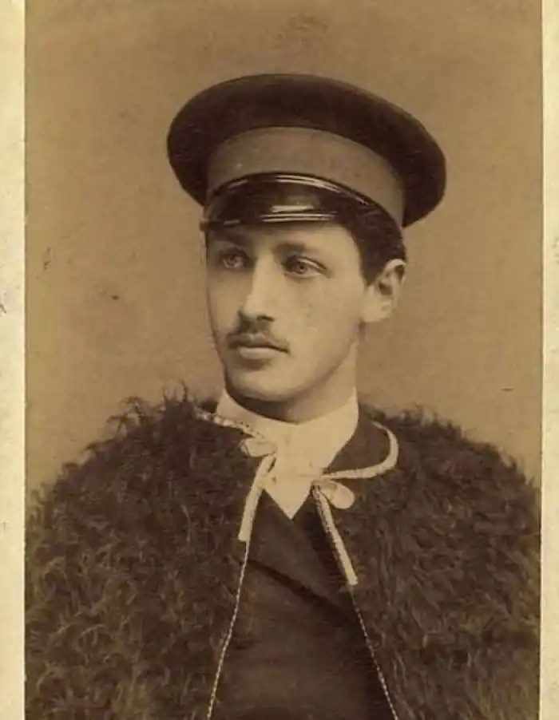

БУНІН, Іван Олексійович (Бунин, Иван Алексеевич — 22.10.1870, Воронеж — 8.11. 1953, Париж) — російський письменник.У російській літературі XX ст. Бунін належить видатне місце. Він був чудовим прозаїком і витонченим ліриком. Загибель дворянських садиб, розпад суспільних зв'язків — провідна тема багатьох творів письменника, і розкривається вона завжди по-елегійному сумно. Його творча манера поєднує в собі і сувору виразність гравюри, і яскравий колорит живопису. Бунін тонко зауважив зв'язок людини з історією, із Всесвітом, водночас тверезо усвідомлюючи неприкаяність і самотність людського буття.
Бунін народився 22 жовтня 1870 року у Воронежі, походив із старовинного, хоча й не надто заможного, дворянського роду. Серед його предків були відомі літератори (зокрема, поетеса Анна Буніна, яку називали "російською Сафо", та поет-романтик В. Жуковський, котрий брав участь у звільненні Т. Шевченка з кріпацтва і був одним із літературних "учителів" О. Пушкіна).
Дитинство і юність письменника минули на хуторі Бутирки в Єлецькому повіті, що на Орловщині. Протягом чотирьох років він навчався у Єлецькій гімназії, а потім здобував знання вдома, під керівництвом старшого брата Юлія, висланого з Петербурга за участь у русі народовольців. Бунін завжди любив Україну, йому подобалося мандрувати українськими степами, спілкуватися з місцевими жителями, слухати народні пісні. У 1889 році він побував у Харкові та Криму, а через рік здійснив мандрівку за течією Дніпра, відвідавши могилу Т. Шевченка у Каневі. З 1891 року письменник жив у Полтаві, працював у статистичному бюро, а потім у бібліотеці земської управи. Він з великим інтересом стежив за українською літературою, ходив на спектаклі трупи П. Саксаганського, захоплювався грою славетної актриси Марії Заньковецької. Українська тема згодом стане визначальною для багатьох прозових ("На край світу", "Лірник Родіон", "Суходіл ") та поетичних творів письменника. Бунін рано почав писати і друкуватися. Його дебютна книжка "Вірші 1887-1891 років" ("Стихотворения 1887—1891 гг.") побачила світ у 1891 році. В оповіданнях Б., які письменник створив у 90-х роках XIX ст., йшлося про актуальні проблеми життя російського села. Цим творам притаманне знання народного життя, зв'язок з традиціями російської реалістичної прози. Наприкінці XIX ст. Бунін переїхав у Москву і зблизився з Максимом Горьким, який високо цінував талант молодого письменника ("красивий, як матове срібло"), але іноді гостро критикував його за аполітизм і "панську неврастенію". Напередодні революції 1905 р. Бунін був уже досить помітною постаттю у тогочасній російській літературі. Проте його популярність продовжувала зростати й надалі. Він тричі ставав лауреатом найвищої нагороди Російської Академії наук — премії імені Пушкіна, яку отримав за правдивий артистичний талант, з яким "він відтворив у прозі типовий російський характер". У 1909 році Буніна було названо одним із дванадцяти почесних членів Академії (серед яких був і Л. Толстой). Однак по-справжньому популярним письменник, за його власним зізнанням, став після публікації великої соціально-психологічної повісті "Село" ("Деревня", 1909-1910), у якій з суворою нещадністю змалював похмурі будні російського села, злиденність, невігластво, замшілість побуту і психології селян. Цю книгу Бунін писав, живучи в Італії, на острові Капрі, де часто зустрічався з Максимом Горьким, М. Коцюбинським та іншими літераторами. Напередодні Першої світової війни у творчості Буніна з'являються нові мотиви й образи, розширюється діапазон тем, збагачується новими барвами стилістична палітра. У цей час письменника цікавлять передусім так звані "вічні теми": скороминущість і трагічність людського життя, приреченість людини на фатальну самотність, нерозуміння і страждання. В атмосфері цього трагічного світовідчуття розкривається й одна з центральних тем усієї прози Буніна — тема кохання. Ще в 1888 р. юний письменник стверджував у одній із статей: "Кохання, як почуття вічне, завжди живе і юне, служило і буде служити невичерпним матеріалом для поезії; воно вносить ідеальне ставлення і сенс в буденну прозу життя, пробуджує благородні інстинкти душі і не дозволяє зав'язнути у вузькому матеріалізмі і грубому тваринному егоїзмі". До кращих зразків прози Буніна, написаної на цю тему, належать оповідання "Граматика кохання" (1915), "Легке дихання" (1916), "Сни Чанга"(1916) та інші. Першу світову війну і революцію 1917 р. письменник сприйняв як передвістя близького і неминучого краху Росії. У травні 1918 р. Бунін виїхав з Москви і протягом 1918—1919 pp. жив у Одесі. Глибокий песимізм і різке неприйняття революції відбились в публіцистичній книзі "Окаянні дні" ("Окаянные дни", 1920), яку Бунін написав у Одесі під враженням від нових порядків, встановлених у країні більшовиками. 26 лютого 1920 року разом із залишками розбитої Білої армії письменник залишив Росію і, зрештою, через Константинополь, Болгарію, Сербію дістався до Франції. Протягом трьох років мешкав у Парижі, а з 1923 року перебрався в Приморські Альпи, і відтоді мешкав там майже постійно. В еміграції письменник створив десять нових книг. Серед найпомітніших творів цього періоду — повість "Митине кохання" ("Митина любовь", 1925), автобіографічний роман "Життя Арсеньєва" ("Жизнь Арсеньева", 1927—1933) та збірка "Темні алеї" ("Тёмные аллеи", 1943), до якої увійшло 38 оповідань, присвячених темі кохання. Літературні заслуги Буніна високо оцінила світова громадськість. У 1933 р. він першим серед російських письменників став лауреатом Нобелівської премії. У Франції Бунін пережив фашистську окупацію, режим та ідеологію якої засуджував не менш різко, ніж сталінізм. Крізь усе життя Бунін проніс любов до Росії, під час війни пильно стежив за успіхами радянських військ і радо вітав перемогу над нацистами, але повернутися до сталінського СРСР відмовився. Письменник помер у Парижі 8 листопада 1953 р. від хвороби легень. Визнаний майстер прози, Бунін був також видатним поетом. Його, поетична творчість характеризується виразним зв'язком з традиціями російської класичної поезії, радісним світосприйняттям, тяжінням до строгої, ясної форми, до реалістичного змалювання людей і явищ навколишнього світу. Крім того, Бунін був чудовим перекладачем. Неперевершеним залишається його переклад поеми Г. Лонгфелло "Пісня про Гайявату", який у 1903 р. Академія наук відзначила Пушкінською премією. Буніну належать переклади таких видатних творів світової літератури, як містерії "Каїн" і "Манфред" Дж. Байрона, "Леді Годіва" А. Теннісона, "Кримські сонети" А. Міцкевича. Варто також зауважити, що в 1900 році були опубліковані два бунінські переклади поезій Т. Шевченка — початок "Заповіту" і перші рядки вірша "Закувала зозуленька". А в романі "Життя Арсеньєва "автор назвав Шевченка "достеменно геніальним поетом". Т. Безкоровайний